PHAM Nhu Quynh
Contact
PHAM Nhu Quynh
Contact
“Gangnam Restaurant”Branding / Visual Identity · Traditional Korean inspiration
Typefaces: Busan Garden, SUIT Variable, Space Grotesk
« Gangnam Restaurant »Branding / identité visuelle · Inspiration coréenne traditionnelle
Typographies : Busan Garden, SUIT Variable, Space Grotesk
GANG NAM Restaurant
Project BriefBrief du projet
Gangnam is a Korean restaurant located in Pantin, near Paris, inspired by the vibrant Gangnam district of Seoul. The brand aims to merge Korean authenticity with a modern, cosmopolitan spirit, creating a welcoming space for lovers of Korean cuisine.
Gangnam est un restaurant coréen situé à Pantin, aux portes de Paris, inspiré par le quartier animé de Gangnam à Séoul. La marque veut allier authenticité coréenne et esprit moderne et cosmopolite, pour offrir un lieu chaleureux aux amateurs de cuisine coréenne.
As the lead designer, I developed a complete visual identity system that reflects the brand’s core values: authenticity, modernity, expertise, and hospitality. This included concept development, logo design, typography, color palette, iconography, and applications across both print and digital touchpoints.
En tant que designer principale, j’ai développé un système d’identité visuelle complet qui reflète les valeurs fondamentales de la marque : authenticité, modernité, savoir-faire et hospitalité. Ce travail comprenait le développement du concept, la création du logo, la typographie, la palette de couleurs, l’iconographie et leurs déclinaisons sur supports imprimés et numériques.
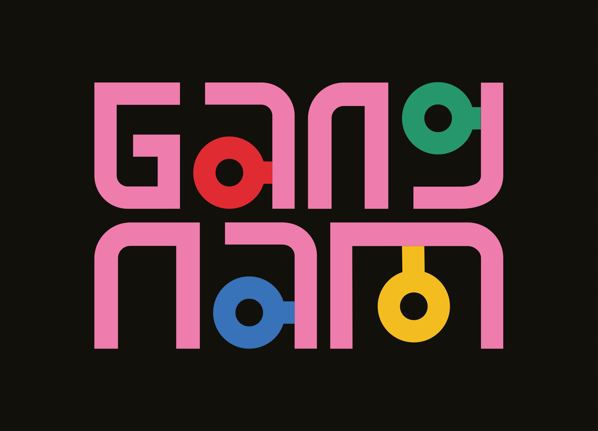
Graphic Principle BoardPlanche de principes graphiques

Creative IntentionIntention créative
The visual identity (color palette) draws inspiration from three main cultural and aesthetic references:
L’identité visuelle (la palette de couleurs) puise dans trois grandes références culturelles et esthétiques :
Obangsaek – Traditional Korean Color Theory: these colors (red, blue, yellow, white, and black, with some modern variations) are rooted in Korea’s philosophical principles of Yin-Yang and the Five Elements (wood, fire, earth, metal, and water). Each color carries deep cultural symbolism, used to communicate balance, energy, and harmony — values that align with the restaurant’s ethos of authenticity and tradition.
Obangsaek – la théorie coréenne traditionnelle des couleurs : ces couleurs (rouge, bleu, jaune, blanc et noir, avec quelques variantes modernes) s’enracinent dans les principes philosophiques coréens du yin et du yang et des cinq éléments (bois, feu, terre, métal et eau). Chacune porte une forte symbolique culturelle et exprime l’équilibre, l’énergie et l’harmonie — des valeurs en accord avec l’attachement du restaurant à l’authenticité et à la tradition.
Modern Gangnam Nightlife Aesthetic: the design incorporates vibrant colors and playful, geometric forms reminiscent of Gangnam’s neon-lit nightlife. The use of bold typography, vivid tones, and LED-inspired visual energy reflects the youthful, modern vibe of Seoul’s iconic district.
L’esthétique moderne des nuits de Gangnam : le design intègre des couleurs vibrantes et des formes géométriques ludiques qui évoquent la vie nocturne de Gangnam, baignée de néons. Typographie affirmée, tons vifs et énergie visuelle inspirée des LED traduisent l’atmosphère jeune et moderne du quartier emblématique de Séoul.
Mugunghwa: the logo and icon system are inspired by Mugunghwa – the national flower of South Korea.
Mugunghwa : le logo et le système d’icônes s’inspirent du mugunghwa, la fleur nationale de la Corée du Sud.
The visual identity merges Korean tradition with modern vibrancy, striking a balance between authenticity and tradition.
L’identité visuelle marie tradition coréenne et vitalité moderne, dans un juste équilibre entre authenticité et tradition.
“Gangnam Restaurant” rebrandingLogo guideline grid · Iconography guideline grid
Rebranding « Gangnam Restaurant »Grille de construction du logo · Grille de l’iconographie
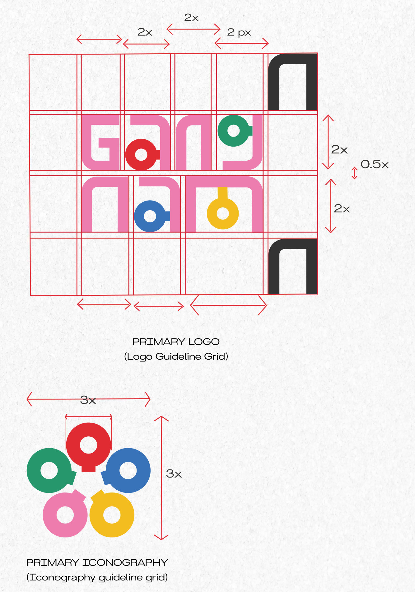

“Gangnam Restaurant” rebrandingSupport declinations (staff uniform, goodies, menu)
Rebranding « Gangnam Restaurant »Déclinaisons (tenue du personnel, goodies, menu)
DeliverablesLivrables
Brand Book (moodboard, editorial charter, graphic & iconographic charters…). Logo design for the rebranding. Logo guideline grid and iconography guideline grid. Support declinations: staff uniform, goodies, menu.
Brand book (moodboard, charte éditoriale, chartes graphique et iconographique…). Création du logo pour le rebranding. Grilles de construction du logo et de l’iconographie. Déclinaisons sur supports : tenue du personnel, goodies, menu.
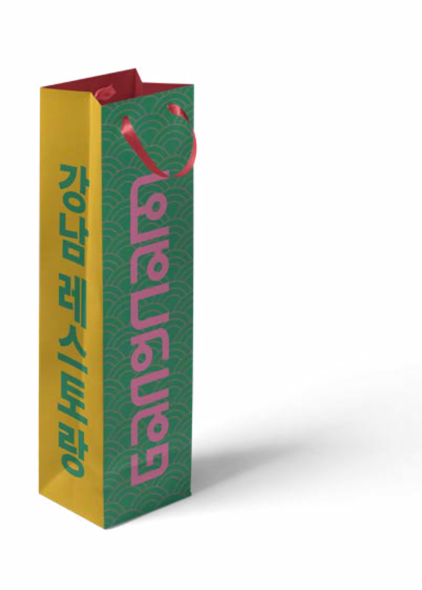
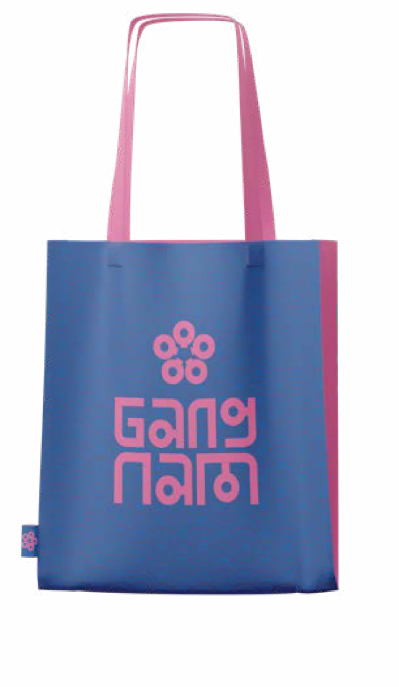
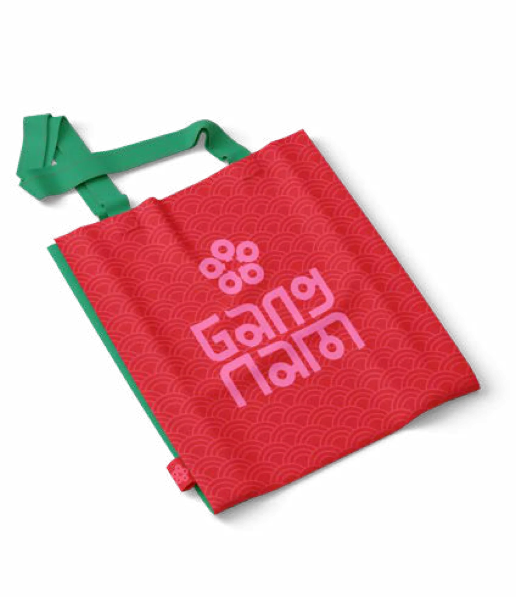
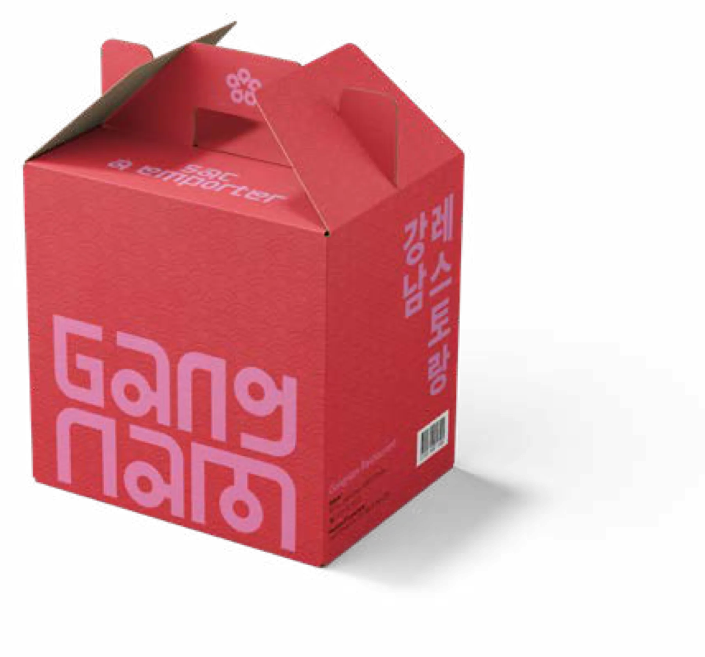
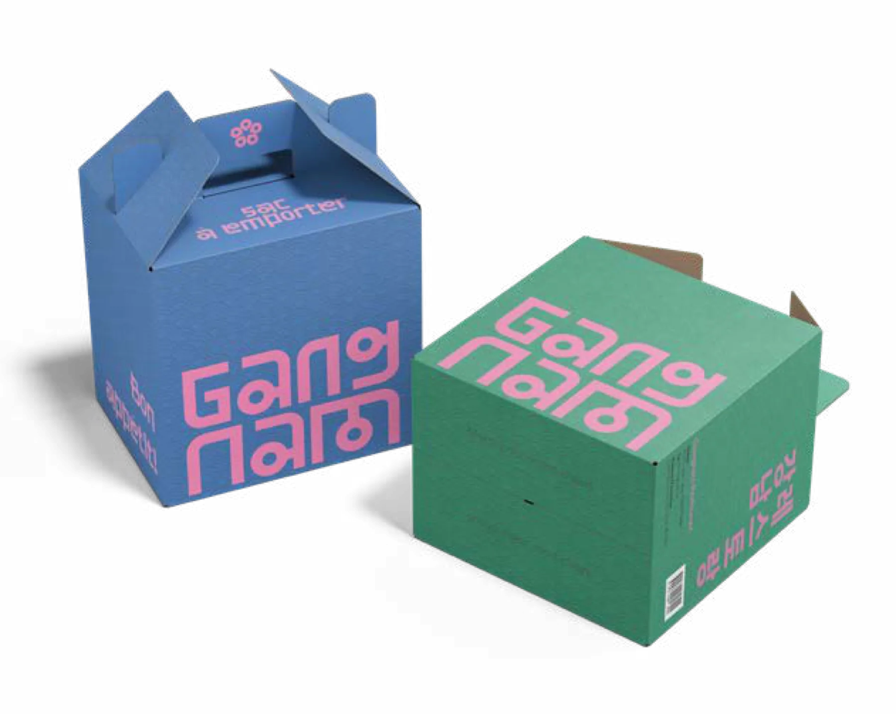
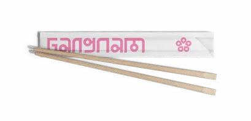
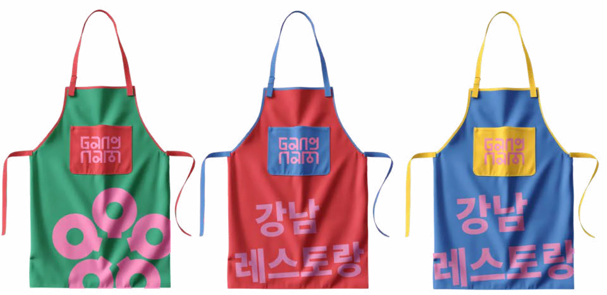
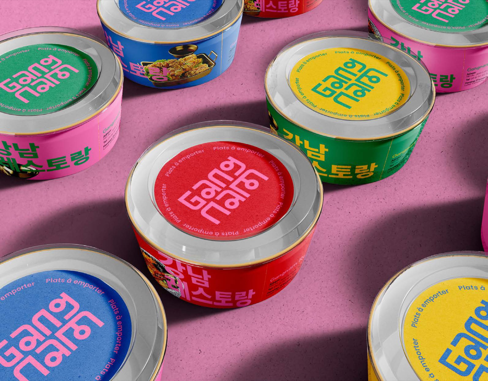
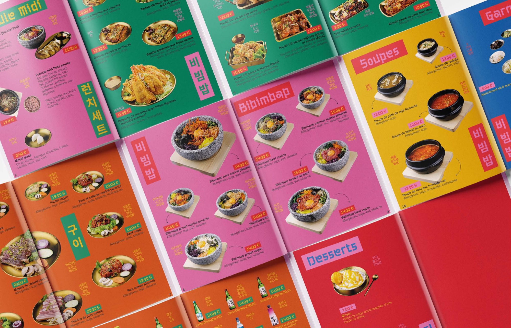